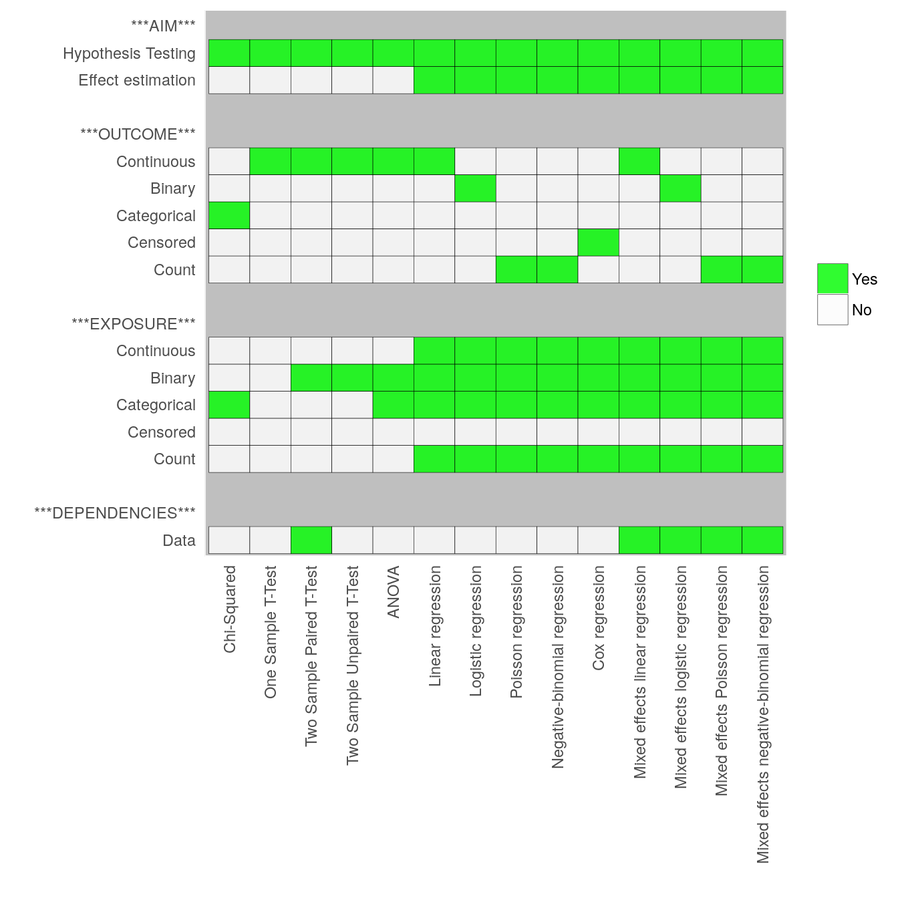

Home
1
Syllabus
2
Reference
3
Variables
3.1
Introduction
3.2
Continuous Variables
3.3
Binary Variables
3.4
Categorical Variable
3.5
Censored Variables
3.6
Count Variables
3.7
Independent Versus Dependent Variables
3.8
Dataset workflow (pipeline)
4
Simple Hypothesis Testing: Chi-Squared, T-tests, and ANOVA
4.1
Hypothesis Testing
4.2
Which Method To Use?
4.3
Chi-Squared Test
4.3.1
Aim/Outcome/Exposure/Parametric/Dependencies
4.3.2
Examples
4.4
One Sample T-Test
4.4.1
Aim/Outcome/Exposure/Parametric/Dependencies
4.4.2
Example 1
4.4.3
Example 2
4.4.4
Example 3
4.4.5
Example 4
4.5
Two sample T-Tests
4.6
Two-sample Paired T-Test
4.6.1
Aim/Outcome/Exposure/Parametric/Dependencies
4.6.2
Example 1
4.6.3
Example 2
4.6.4
Example 3
4.6.5
Example 4
4.6.6
Non-Parametric Equivalent
4.7
Two-sample Unpaired T-Test
4.7.1
Aim/Outcome/Exposure/Parametric/Dependencies
4.7.2
Example 1
4.7.3
Example 2
4.7.4
Example 3
4.7.5
Example 4
4.7.6
Non-parametric equivalent
4.8
ANOVA
4.8.1
Aim/Outcome/Exposure/Parametric/Dependencies
4.8.2
Example 1
4.8.3
Example 2
4.8.4
Example 3
4.8.5
Example 4
4.8.6
Non-parametric equivalent
5
Simple regression (fixed effects)
5.1
Regression in general
5.2
Linear regression
5.2.1
Aim/Outcome/Exposure/Parametric/Dependencies
5.2.2
Example 1
5.2.3
Example 2
5.2.4
Example 3
5.2.5
Example 4
5.2.6
Example 5
5.3
Similarities between t-tests, ANOVA, and linear regression
5.3.1
Example 1
5.3.2
Example 2
5.3.3
Example 3
5.4
Similarities between ANOVA and linear regression
5.4.1
Example 1
5.4.2
Example 2
5.5
Logistic regression models
5.5.1
Aim/Outcome/Exposure/Parametric/Dependencies
5.5.2
Example 1
5.5.3
Example 2
5.5.4
Example 3
5.5.5
Example 4
5.5.6
Example 5
5.6
Poisson/negative-binomial regression models
5.6.1
Aim/Outcome/Exposure/Parametric/Dependencies
5.6.2
Example 1
5.6.3
Example 2
5.7
Cox regression models
5.7.1
Aim/Outcome/Exposure/Parametric/Dependencies
5.7.2
Example 1
5.7.3
Example 2
6
Complicated regression
6.1
Dependencies in your data
6.1.1
What is independent data
6.1.2
What is data with dependencies
6.1.3
Repeated measures/longitudinal data
6.1.4
Matched data
6.1.5
Grouped/clustered data
6.2
Analysing data with dependencies
6.2.1
Mixed effects regression
6.2.2
Conditional logistic regression
6.3
(TBD) Understanding the best practices for data files and project folders
7
Good folder structure
7.1
Data and results
7.2
Keep your source code separate from data
8
Examples
8.1
Poisons Information Center
8.2
Norwegian Water Pipes
8.3
Early warning system (EWS) for waterborne outbreaks (part 1)
8.4
Early warning system (EWS) for waterborne outbreaks (part 2)
8.5
Incidents in the water supply system and illness
8.6
Compliance with boil water advisories and perception of risks
9
Solutions
9.1
Poisons Information Center
9.2
Norwegian Water Pipes
9.3
Early warning system (EWS) for waterborne outbreaks (part 1)
9.4
Early warning system (EWS) for waterborne outbreaks (part 2)
9.5
Incidents in the water supply system and illness
9.6
Compliance with boil water advisories and perception of risks
Which Stats Method Should I Use?
Chapter 2
Reference
